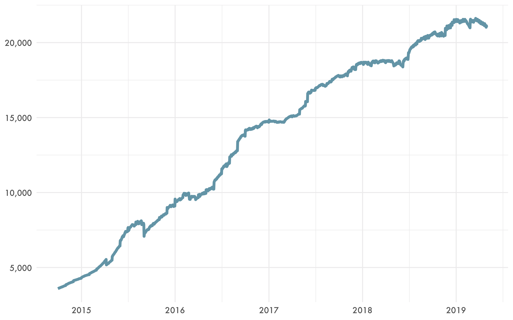
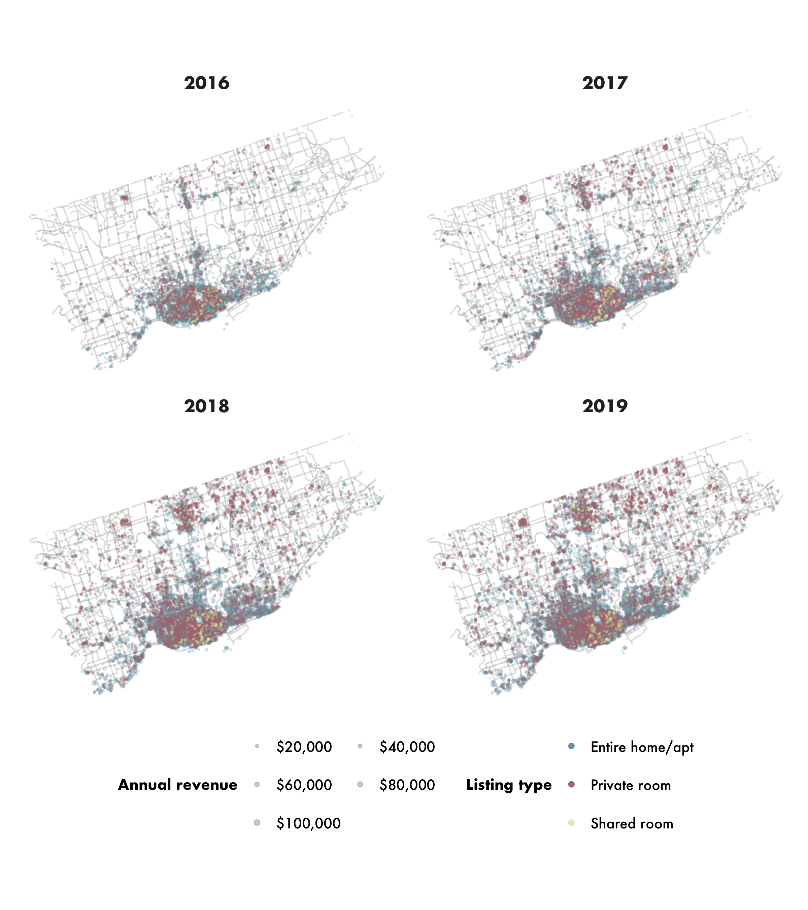
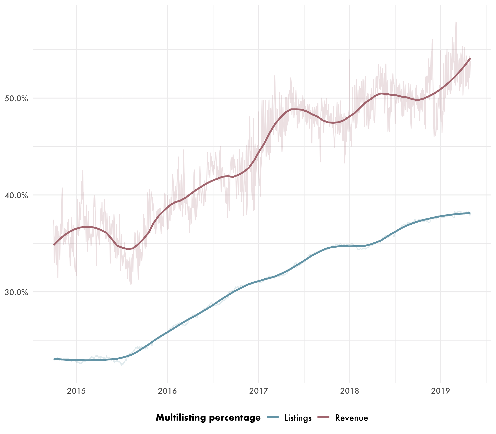
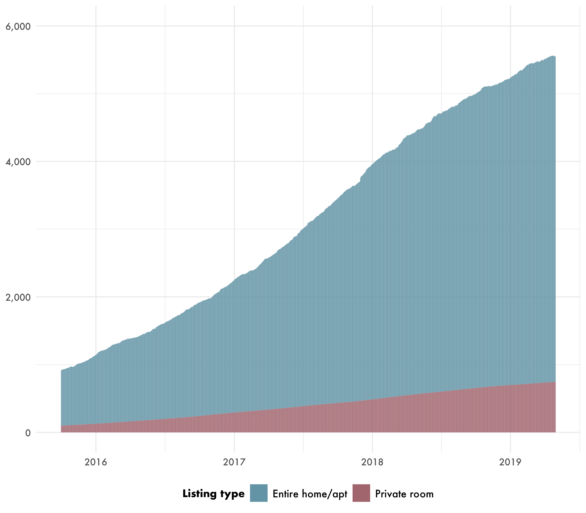

Short-term rentals (STRs) are not currently permitted in the City of Toronto. In December 2017 and January 2018, City Council introduced new regulations on STRs in Toronto, including amendments to the zoning bylaws, which would limit STRs to a host’s principal residence. These amendments have been appealed to the provincial Local Planning Appeal Tribunal (LPAT), with a hearing scheduled for August 26, 2019. The bylaws will come into effect should the LPAT dismiss the appeal.
Proper evaluation of the City of Toronto’s STR bylaws requires an empirical understanding of the STR market in Toronto. Accordingly, in advance of the provincial hearing, we have produced a brief overview of the current status of STRs in Toronto. It’s called Short-term rentals in Toronto: UPGo city spotlight, and it’s available for download now. As always, although much of the raw data we rely on is private, all of our analysis is publicly available for scrutiny, replication and reuse at GitHub. Below I summarize the main results and graphics from the paper.
On April 30, 2019, there were 21,000 short-term rentals active in the City of Toronto—an 11% year-over-year increase.
Figure 1: Active daily STR listings in the City of Toronto
Toronto has the most STR listings of any city in the country, and generates by far the most revenue. The city’s 14,000 STR hosts earned $208 million in revenue last year.
| City | Active listings | Listings per 1000 residents | Annual revenue | Revenue per listing |
|---|---|---|---|---|
| Toronto | 21,070 | 7.7 | $218.9 million | $10,400 |
| Montréal | 21,044 | 12.3 | $174.4 million | $8,300 |
| Vancouver | 5,536 | 8.8 | $115.6 million | $20,900 |
| Calgary | 4,528 | 3.7 | $28.9 million | $6,400 |
| Ottawa | 4,139 | 4.4 | $29.0 million | $7,000 |
Figure 2: Active daily STR listings in the top five Canadian cities
STR listings in Toronto are heavily concentrated in the downtown area, with a secondary concentration near Yonge and Sheppard.
Figure 3: Spatial distribution of active STR listings in Toronto
Toronto’s STR market is dominated by entire-home listings, which represent two thirds of active listings and five sixths of host revenue. The majority of entire-home STR listings in Toronto are studio (10%) or one-bedroom (52%) units. 13% of entire-home listings are hosted in housing units with three or more bedrooms, which is considered family-appropriate housing by the City.
| Listing type | Active listings | Annual revenue | % of all listings | % of annual revenue | Revenue per listing |
|---|---|---|---|---|---|
| Entire home/apt. | 13,845 | $187.7 million | 65.7% | 85.8% | $13,600 |
| Private room | 6,874 | $30.2 million | 32.6% | 13.8% | $4,400 |
| Shared room | 351 | $0.9 million | 1.7% | 0.4% | $2,700 |
Figure 4: Bedroom sizes among Toronto entire-home STRs
STR revenue in Toronto is distributed in a highly unequal fashion: more than two fifths of all revenue last year was earned by just one in twenty hosts, and the most successful ten percent of hosts earned fully 56% of all STR revenue.
| Host percentile | Annual revenue |
|---|---|
| 25th percentile | $2,600 |
| 50th percentile (median) | $7,700 |
| 75th percentile | $18,400 |
| 100th percentile | $355,700 |
Figure 5: STR host revenue distribution in Toronto
Nearly two fifths (38%) of active listings were commercial multilistings (listings controlled by a host with two or more entire-home listings or three or more private- room listings), which earned 53% of total host revenue.
Figure 6: The percentage of total listings and revenue accounted for by multilistings
STRs have removed more than 5,500 housing units from Toronto’s long-term housing market. 4,800 of these were frequently rented entire-home listings, and 745 were clusters of private-room listings operating out of the same housing unit. The equivalent figure one year ago was less than 4,500, which means that there has been a 24% increase in STR-induced housing loss in the City of Toronto in the last twelve months—a much higher growth rate than the growth in total active listings (11%).
Figure 7: Housing units converted to dedicated STRs in Toronto
There are approximately the same number of housing units converted to dedicated short-term rentals in Toronto as there are housing units vacant and available for rent. This means that, if commercial STRs were converted back to long-term housing, this would be equivalent to doubling the rental vacancy rate in the short-term, and bringing down rents in the long-term.
Approximately 40% of Toronto STR listings are likely in violation of the STR bylaws’ prinicipal residence requirement. These 8,700 listings would not be permitted if the bylaws come into effect.
‘Short-term rentals in Toronto: UPGo city spotlight’ is publicly available for download today.